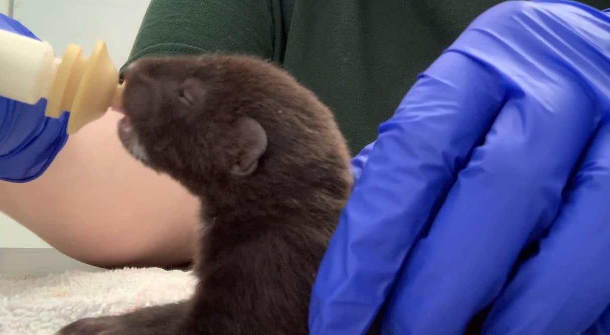

About This Guide
This guide provides clear, accessible information to help people safely and humanely coexist with urban wildlife.
Why This Exists
Urban wildlife encounters are becoming more common as natural habitats overlap with developed areas. This guide was created to help people better understand wildlife behavior and respond in ways that reduce harm and conflict.
About the Creator
This website was created as a student project for educational purposes only. While the information provided is based on current wildlife science, best practices, and humane coexistence principles, it is not intended to replace professional wildlife guidance or emergency assistance. It is also important to recognize that scientific understanding continues to evolve, and recommendations may change over time as new research becomes available.
The creator of this site has prior experience working in wildlife rehabilitation and holds academic training in wildlife conservation and advocacy. However, this website does not operate as a licensed wildlife rehabilitation service, and none of the contact features or references on this site are monitored for real-time assistance.
If you encounter injured, sick, or orphaned wildlife, please contact a licensed wildlife rehabilitator or your state wildlife agency.

Example of a baby mink receiving care in a wildlife rehabilitation setting. Wildlife infants require specialized diets, handling, and medical care that should only be provided by licensed rehabilitators.
Content & Media Attribution
All photographs used throughout this website were taken by the creator unless otherwise noted. These images are included to support educational content and provide real-world context for wildlife behavior and rehabilitation scenarios.
While external scientific and conservation principles have been referenced in the development of this content, all written explanations, visuals, and layouts are original work created for educational purposes.
The website logo was created with assistance from ChatGPT, an AI tool by OpenAI.
Our Approach
This site focuses on education, prevention, and respect for both people and animals. By understanding behavior and using humane solutions, communities can reduce unnecessary harm and respond more effectively to wildlife encounters.
What This Site Is
- Educational and informational
- Focused on humane, non-lethal solutions
- Designed to promote coexistence and prevention
What This Site Is Not
- A wildlife removal service
- A replacement for licensed professionals
- A source of emergency response
Coexisting with wildlife starts with awareness, patience, and informed decision-making.